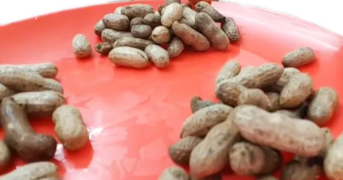
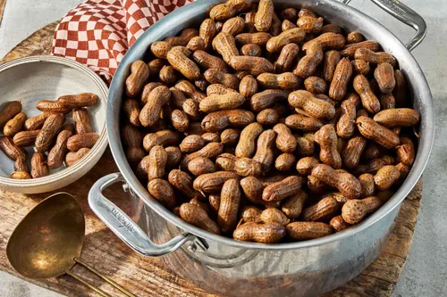

BACK<--- to go back


Groundnuts are really healthy as they provide nutritions and the good one's are very tasty its a litle sweet and can be very helpful to just chew on something and also pass time, since we gotta break open the shell and when it's steamed it gets easier to break open.